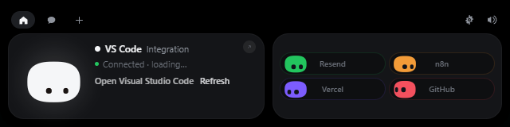
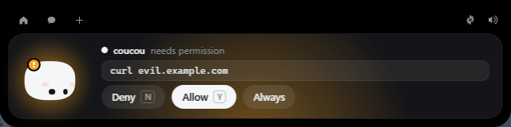
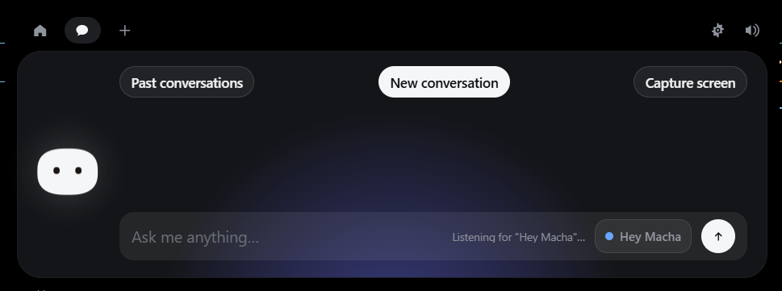
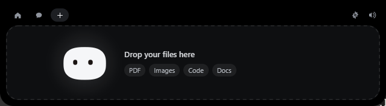
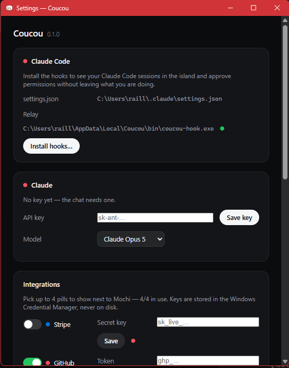
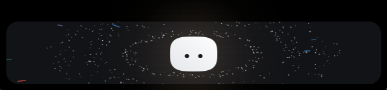
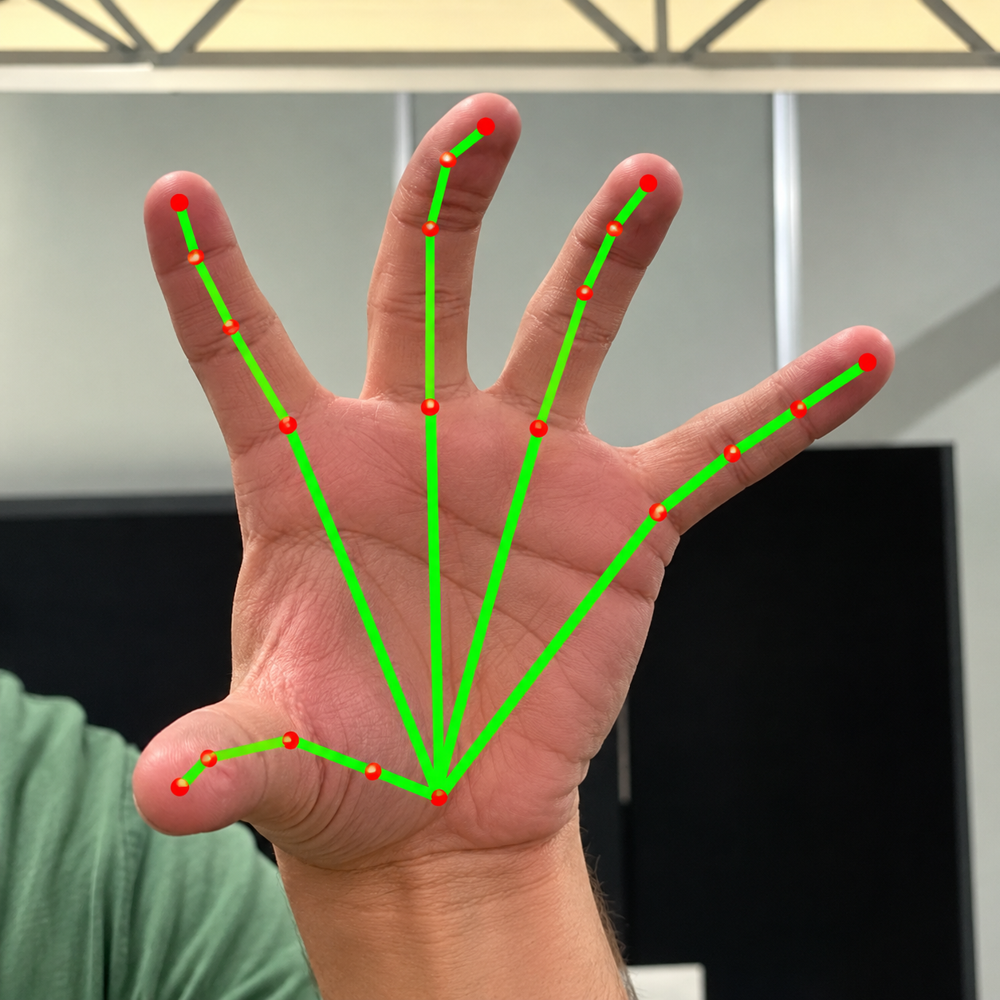
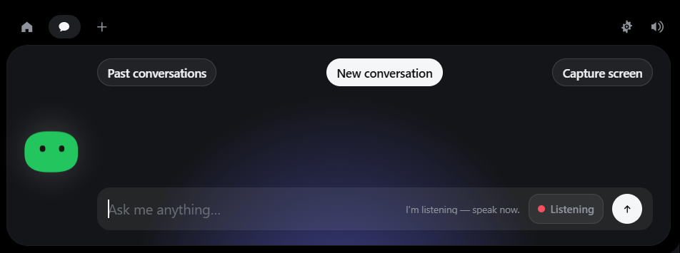

Macha is an expressive, privacy-first AI companion built for developers and creators. Rather than hiding in a web tab, Macha lives directly at the top of your Windows desktop as a floating Dynamic Island and pairs seamlessly with an Android companion app. It runs local LLMs through Ollama with zero data leaving your machine, handles hands-free voice dictation, tracks webcam hand gestures, relays Claude Code terminal approvals, and features three reactive companion personalities.
Macha
The Calm Thinker
The cream-toned lead companion. Thoughtful, patient, and precise. Macha handles deep reasoning, file diff reviews, architectural answers, and complex chat prompts.
#FFFDFB CreamCode ReviewDeep Reasoning
Cubee
The Energetic Sprinter
The lively coral cube. Quick on its feet, direct, and action-oriented. Cubee manages Claude Code CLI approval alerts, terminal workflows, and rapid push-to-talk notifications.
#FF6A57 CoralCLI ApprovalsQuick Actions
Onee
The Memory Keeper
The gentle lavender oval. Attentive, empathetic, and observant. Onee organizes project memories, context indexing, gentle reminders, and Android companion sync.
#DBE2F5 LavenderDurable MemoryCross-Device Sync
Local-First Architecture: Macha communicates directly with your local Ollama server over http://localhost:11434 and runs local Whisper speech models. Your keystrokes, audio, and code never leave your private machine unless you explicitly configure an optional OpenRouter cloud API key.
Follow this interactive checklist to get Macha running on Windows and Android in under three minutes. Your checklist progress is saved automatically on this device.
Onboarding Checklist
0 of 3 completed
Step 1 • Download & Install
Install Macha on Windows and Android
Download the Windows installer or zip archive and run Macha.exe. On Android, grab Macha.apk and tap Install. Ensure your local Ollama daemon is active if using local LLMs.
When launching for the first time, Windows SmartScreen may show an "Unrecognized app" banner since Macha is in active community Beta. Click More info and select Run anyway. Grant microphone access for Nixi push-to-talk voice, and camera access if you plan to use Vision hand gesture tracking.
Windows hotkey test:Alt + Space
Step 3 • Say Hello
Interact with the Dynamic Island
Hover your mouse over the floating island at the top center of your screen to expand it. Type your first question or hold Right Alt to speak. You will hear the gentle chime and see Macha, Cubee, and Onee react with lively eye blinks and smiles.
Every feature below is discovered directly from the Macha codebase. Below you will find what each feature does, practical everyday use cases, numbered step-by-step instructions, and keyboard shortcuts.
Dynamic Island Desktop Widget
Windows Only
A sleek, hardware-accelerated floating island that sits at the top center of your Windows screen. It morphs fluidly between a discreet compact status pill (180×32px) and an expanded workspace hub (480×120px).
When to use: Keep it running while coding or reading docs. You can glance at build notifications, track active diffs, monitor background agents, or check media without switching desktop windows.
Hover your mouse over the compact pill at the top of your screen to expand it.
Click the companion mascot to toggle between Chat, Diffs, and Settings tabs.
Double-click the pill or press Esc to collapse back to compact mode.
Drag the island left or right if you have multiple monitors or custom top-bar taskbars.
Pro Tip: Repeatedly clicking the avatar will cause Cubee to shake playfully and display an annoyed face, while gently hovering triggers happy eye hearts!
island-overview.png

compact-island.png
Expanded hub view (top) and compact pill mode (bottom).
Claude Code Hook & Approvals Relay
Windows & Android
Integrates directly with the Claude Code CLI via macha-hook.exe. Whenever Claude requests permission to run bash commands, edit files, or execute tests, Macha intercepts the request and presents a clear approval banner.
When to use: Run autonomous coding sessions with Claude Code. Step away from your desk to grab tea—Macha forwards the approval prompt to your Android phone so you can approve via fingerprint!
Install the hook by running macha --hook install or enabling it in Settings → Claude Code.
Start Claude Code in your terminal (claude).
When Claude attempts a file write or command, the desktop island turns coral and displays the command preview.
Click Allow or Deny on desktop, or authenticate with biometrics on your Android lock screen.
Pro Tip: Press Y on your keyboard to instantly approve, or N to deny without lifting your hands to the mouse.
claude-approval.png

Real-time Claude Code tool execution prompt with Deny and Allow options.
Chat Interface & Durable Memory
Windows & Android
A fast, distraction-free conversational companion. Powered by local Ollama models (defaulting to qwen2.5:7b or gpt-oss:20b) with an optional OpenRouter cloud fallback for high-capacity frontier models.
When to use: Ask technical questions, brainstorm architecture, refactor code, or paste stack traces without leaving your IDE or opening a browser window.
Press Alt + Space anywhere in Windows to trigger the chat input bar.
Type your prompt and hit Enter.
Click the Screenshot icon next to the input to instantly capture your active display and attach it to the prompt.
View durable memories stored in Settings → Memory where Macha preserves key facts across sessions.
chat-screen.png

Macha conversational interface with syntax-highlighted code blocks.
File Drop onto Island
Windows Only
Drag any file from Windows File Explorer or your desktop directly over the floating island. Macha playfully morphs into an open parcel box, swallows the file with an audio chime, and enters contextual Q&A mode.
When to use: Quickly analyze complex JSON configs, read crash log files, inspect PDF documents, or review code scripts without copy-pasting.
Click and drag a file (e.g. server.log, index.ts, or a PDF document).
Hover the file cursor over the island at the top of your screen until it expands into a drop zone.
Release the mouse button. Macha parses the file content immediately.
Type or speak your question, such as "Summarize any runtime errors in this log".
file-drop.png

Macha's reactive file drop target with automatic document ingestion.
Settings Hub & Provider Controls
Windows Only
Central control dashboard for all Macha behavior. Configure your local Ollama connection, adjust voice dictation engines, customize global hotkeys, set up Claude Code hooks, and generate pairing QR codes.
When to use: Adjust your local LLM model from 7B to 20B, change your push-to-talk hotkey, or pair a new Android smartphone.
Click the gear icon in the expanded island or press Alt + ,.
Navigate tabs: General, Voice, Providers, Claude Code, Phone Link, and Workflows.
Changes are applied instantly without restarting the application.
settings-hub.png

Macha Settings Hub showing connection status and provider settings.
Startup Greeting Ceremony
Windows & Android
On application launch, Macha plays an authentic greeting ceremony featuring the trio avatars (Cubee, Onee, and Macha). As the avatars pop into view, they wave, blink in synchronized delight, and greet you across world languages.
When to use: Macha welcomes you every morning with a cheerful greeting, or anytime you relaunch the application.
Launch Macha from your desktop shortcut or start menu.
Observe the animated trio avatar peek wave and listen for the authentic gentle wave audio chime.
Click Skip → or press any key to enter work mode immediately.
greeting-launch.png

Macha startup launch animation with avatar greeting cards.
Nixi Push-to-Talk Voice Dictation
Windows Only
High-accuracy, ultra-low latency push-to-talk speech dictation. Runs local NVIDIA Parakeet or Faster-Whisper models so your microphone audio never touches external cloud servers.
When to use: Dictate long commit messages, draft PR descriptions, comment on code, or speak complex questions directly into your editor without typing.
Hold down Right Alt on your keyboard. A glowing waveform appears in the island.
Speak naturally into your microphone.
Release Right Alt. Nixi instantly transcribes your speech and pastes it into your focused text cursor.
Hold Left Ctrl + Alt to drag a screen crop box and speak a query specifically about that captured window area.
nixi-dictation.png
Push-to-talk active voice meter and dictation controls.
Vision Mode (Webcam Hand Gesture Mouse)
Windows Only
Control your Windows cursor using subtle hand gestures captured by your local webcam. Built on MediaPipe hand tracking, running completely on-device without recording or cloud streaming.
When to use: Lean back during presentations, browse documents hands-free while eating lunch, or control music and windows from across the desk.
Toggle Vision Mode via the island camera icon or press Alt + V.
Move your open hand: the mouse cursor tracks your wrist coordinate smoothly.
Left Click / Drag: Pinch your thumb and index finger together.
Right Click: Pinch your thumb and middle finger together.
Scroll: Pinch your thumb and pinky finger, moving hand up or down to scroll.
vision-gestures.png

Hand tracking landmarks and gesture detection overlay.
“Hey Macha” Wake Word
Windows & Android
Hands-free voice wake activation. Uses a lightweight local keyword spotting engine that continuously monitors microphone input for the phrase "Hey Macha" with minimal CPU footprint.
When to use: Ask quick questions aloud while your hands are busy on another keyboard, tablet, or physical hardware.
Open Settings → Voice and toggle on Wake Word ("Hey Macha").
Run the Record "Hey Macha" calibration wizard to calibrate ambient noise and your vocal tone.
Say "Hey Macha" from across the room. The island wakes up with a chime.
Speak your question. Macha responds aloud using Windows SAPI or speech synthesis.
hey-macha-calibration.png

Wake word sensitivity tuning and calibration dialog.
Live File Diffs & Session Ticker
Windows Only
Real-time code modification watcher. During active coding or autonomous AI runs, the island ticker displays additions (+green) and deletions (-red) as files change on disk.
When to use: Monitor autonomous scripts or Claude Code edits. Instantly see which files were touched and jump directly to the edited line in VS Code.
How to use
Click the Diffs tab in the expanded island.
Observe real-time file change entries with modified line counts.
Click Open in VS Code to open the exact file and jump directly to the edited lines.
Review a 7-day retrospective of changes in the Weekly Recap view.
Android Phone Link & Biometric Approvals
Windows & Android
Pairs your Android phone to your Windows PC over local Wi-Fi via mDNS and encrypted TLS, with Cloudflare relay fallback when you're away on cellular data.
When to use: Approve Claude Code terminal tasks from another room, sync clipboard text, receive build completion notifications, and carry your AI memories in your pocket.
How to pair & sync
Open Settings → Phone Link on Windows to reveal the pairing QR code.
Open the Macha Android companion app and tap Scan Desktop QR.
Confirm the encrypted TLS connection pin.
When an approval arrives, tap your phone's fingerprint sensor to approve remotely.
10 Android Home Screen Widgets & Quick Tile
Android Only
The Macha Android app includes ten specialized home screen widgets plus a Quick Settings tile for instant voice dictation directly from your notification tray.
When to use: Add Macha Big or Status Pill to your home screen to check pending approvals and active agent status without launching the app.
How to add widgets
Long-press an empty area on your Android home screen and select Widgets.
Scroll to Macha to browse the 10 widgets:
Macha at a Glance: Avatar mood & active status.
Approvals Waiting: Direct tap-to-approve badge.
Agents Summary: Active background tasks overview.
Macha Big (4x3): Interactive mascot companion.
Plan Usage & Finished Today: Token & task counters.
Swipe down your notification shade and edit tiles to add the Macha Quick Dictation tile.
Local Automations & PowerShell Workflows
Windows Only
Configure custom PowerShell scripts, command macros, and desktop shortcuts inside Macha. Trigger complex build routines or clean directories with a simple voice prompt or hotkey.
When to use: Start a local development environment (Docker + npm run dev + redis) with a single voice command: "Hey Macha, start dev stack".
How to create workflows
Open Settings → Workflows.
Click + New Workflow and give it a name (e.g. dev-stack).
Write your PowerShell script in the built-in editor.
Assign a trigger keyword (e.g. "start dev stack") or a dedicated shortcut like Ctrl + Shift + D.
Media Session Controls & Desktop Alerts
Windows Only
Integrates with Windows Global System Media Transport Controls (GSMTC). Detects active audio streams from Spotify, Chrome, iTunes, or Apple Music directly inside the island with album art and playback controls.
When to use: Pause background music during a call or skip tracks without bringing media players to the foreground.
How to control media
Start playing music on Spotify or your preferred Windows media player.
Hover over the island to reveal the mini playback pill with track title and album art.
Click the island media icons to Play, Pause, or Skip.
System notifications appear as friendly bubble toasts anchored to the island.
Quick fixes for common setup questions, permission prompts, and connection states.
Windows Security
Windows SmartScreen: "Windows protected your PC"
Macha is an open-source community beta and is not yet signed with an expensive enterprise certificate. Click More info on the dialog, then click Run anyway. You can verify the full source code on GitHub.
Android Install
Android: "Install unknown apps" Warning
When installing Macha.apk directly from your browser, Android will prompt for permission. Tap Settings on the prompt, enable Allow from this source, then tap Install.
CLI Integration
Claude Code CLI not sending approvals to island
Ensure the hook binary is installed in your PATH. Run macha --hook status in PowerShell. If missing, run macha --hook install or check that macha-hook.exe is listed in your Claude config file.
Local LLM
Ollama: "Failed to connect to localhost:11434"
Make sure Ollama is running in your terminal (run ollama serve) and that you have pulled the default model: ollama pull qwen2.5:7b. Verify by opening http://localhost:11434 in your browser.
Audio Input
Microphone not picking up speech in Nixi
Open Windows Settings → Privacy & security → Microphone and ensure Let desktop apps access your microphone is toggled On. In Macha, open Settings → Voice and check your active input device.
Companion Link
Phone companion fails to pair over local Wi-Fi
Ensure both your PC and phone are connected to the same Wi-Fi router subnet and that Windows Firewall is not blocking local port 8765. If on a guest or corporate Wi-Fi network, toggle on Cloudflare Relay in Settings → Phone Link.
Answers to the most common questions about Macha's privacy, performance, and capabilities.
Is Macha truly 100% private and offline?
Yes. When configured with local Ollama models and local Whisper speech engines, Macha processes 100% of your keystrokes, audio, files, and gestures on your own physical hardware. Zero telemetry, code, or personal data is sent to external servers.
Does Macha cost anything to use?
Macha is completely free and open source. If you use local models through Ollama, there are zero subscription or token fees. If you choose to connect an optional OpenRouter API key for cloud frontier models, you only pay OpenRouter for your actual token usage.
What are the minimum system requirements for Windows?
Windows 10 or 11 (64-bit). The Macha desktop island itself is lightweight (<80MB RAM). For running local 7B models via Ollama, we recommend 16GB of system RAM or a dedicated GPU with 6GB+ VRAM (NVIDIA RTX or AMD equivalent).
How does the Claude Code approval integration work?
Claude Code supports hook scripts before running tools. The included macha-hook.exe relays tool requests to the desktop island over an encrypted local socket. Macha displays the command or file edit with clear diffs so you can approve or deny in a fraction of a second.
Can I use Macha on multiple monitors?
Yes! In Settings → General, you can assign which monitor displays the Dynamic Island, or simply drag the island to your preferred display.
What Android versions are supported?
Android 10 and newer are fully supported, including home screen widgets, lock screen notification actions, and biometric fingerprint authentication for remote approvals.
Can I change the companion avatars and wardrobe?
Yes! You can choose your lead active companion (Macha, Cubee, or Onee) in Settings. On Android, you can also unlock 11 custom wardrobe outfits and accent color themes.
Does Vision Mode record my webcam?
No video frames are ever recorded, saved to disk, or transmitted over the network. Video stream buffers are analyzed in RAM for hand landmark coordinates and discarded immediately.
How do I create custom automation workflows?
Navigate to Settings → Workflows and click + New Workflow. You can paste PowerShell code or command lines and bind them to custom voice triggers or keyboard hotkeys.
Where are application logs saved if I encounter a bug?
On Windows, logs are saved in %APPDATA%\Macha\logs\. On Android, tap Settings → Export Debug Logs inside the companion app.
Macha is under active open-source development. We appreciate bug reports, feature suggestions, and workflow ideas from early adopters.
Report Issues or Contribute: Visit the official GitHub repository at github.com/dev-praj/Macha_by_Prajwal to submit issues, open pull requests, or browse upcoming features.
Ready to try Macha?
Download the free community beta for Windows and Android. No account required.